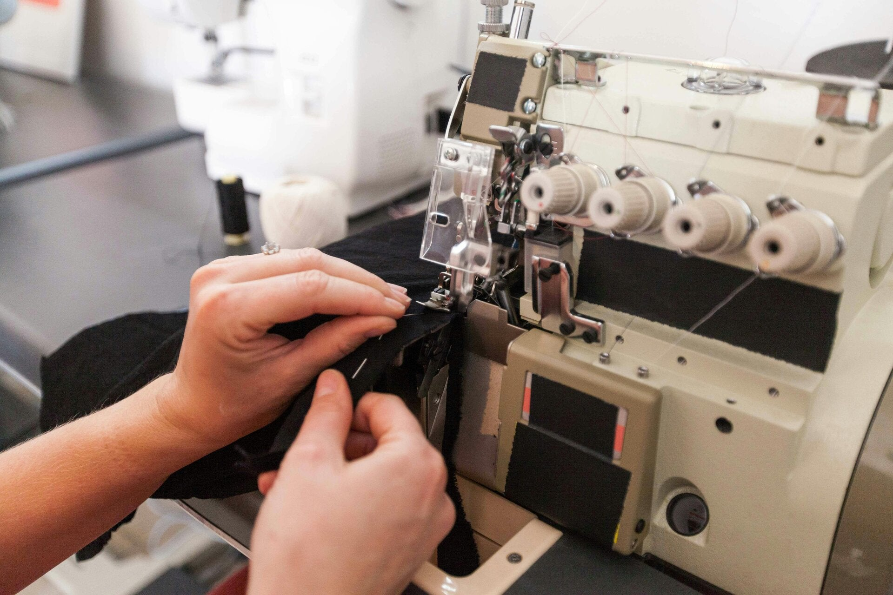
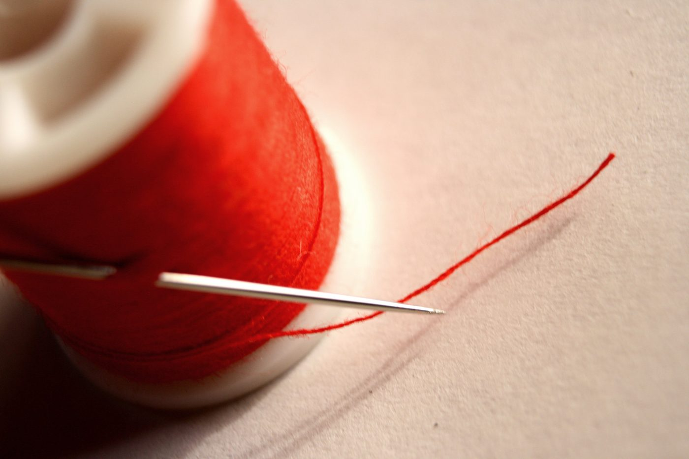

Κλωστή – Kledingreparatie in Kos
Een losse naad in je favoriete vakantiekleding, een knoop die ontbreekt of een broek die toch iets te lang blijkt te zijn? Of heb je tijdens het winkelen in Kos iets leuks gekocht dat nog een kleine aanpassing nodig heeft? Bij Κλωστή kun je terecht voor kledingreparaties en verstelwerk.

Of je nu kleding van thuis hebt meegenomen of iets nieuws hebt gekocht tijdens je vakantie, soms is een kleine reparatie of aanpassing precies wat nodig is.
Wat kun je er laten doen?
- Gaatjes en scheurtjes in kleding herstellen.
- Losse naden opnieuw vastnaaien.
- Ontbrekende of losgeraakte knopen aannaaien.
- Kapotte ritsen repareren of vervangen.
- Jeans en broeken inkorten.
- Broeken, rokken en jurken innemen.
- Kleding aanpassen die net niet goed past.

Zo kun je ook tijdens je vakantie in Kos je favoriete kleding blijven dragen. Loop gerust even binnen met je kledingstuk en informeer naar de mogelijkheden, de kosten en de benodigde tijd.
Adres
Zervou 8, Kos 853 00
Openingstijden
Ma.09:00–14:00 17:00–20:00
Di.09:00–14:00 17:00–20:00
Woe.09:00–14:00 17:00–20:00
Don.09:00–14:00 17:00–20:00
Vrij.09:00–14:00 17:00–20:00
Zat.09:00–14:30
Zon.Gesloten